AI技术正在融入越来越多的软件产品和应用场景中，企业级软件的智能化水平持续提升。具体到CRM领域，针对销售数据的查询是一个典型的可以被AI赋能的场景。CRM系统与智能问数系统的结合，可以有效减少销售日常管理的复杂度，同时提升数据查询与分析的准确性和便捷性。
Cordys CRM（github.com/1Panel-dev/CordysCRM）是新一代的开源AI CRM系统，它不仅能够帮助企业管理从线索到回款（L2C）的各个环节，还能够快速集成AI的技术能力。通过在Cordys CRM中集成SQLBot开源智能问数系统（https://github.com/dataease/SQLBot），可以让CRM系统快速拥有面向销售群体的智能问数能力，支持用户使用自然语言对销售数据进行智能查询与归因分析，有效提升销售管理体验。
本文将为您详细介绍在Cordys CRM中嵌入SQLBot开源智能问数系统的具体操作步骤。
一、在SQLBot中创建高级应用并与Cordys CRM对接
在Cordys CRM中嵌入SQLBot应用的步骤可以分为两步。第一步是在SQLBot中创建一个高级应用，并将其与Cordys CRM的接口完成对接；第二步是在Cordys CRM中嵌入该应用，并开启智能问数开关。在SQLBot中创建高级应用并与Cordys CRM对接的具体步骤如下：
首先，在SQLBot中创建一个高级应用，点击SQLBot首页左下角的用户名，在弹出的选项菜单中选择“系统管理”选项；
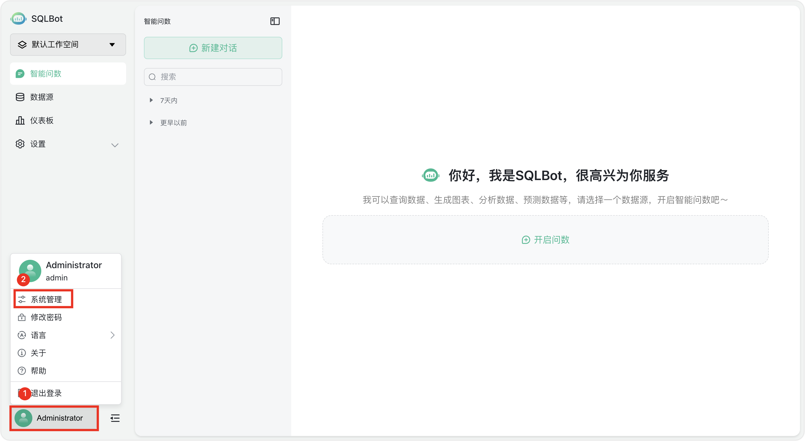
▲图1 SQLBot操作主界面
然后，在“系统管理”菜单栏中选择“嵌入式管理”选项，即可看到在SQLBot中当前已经创建的各种嵌入式应用。点击页面右上角的“创建应用”按钮，选择“高级应用”选项即可进入高级应用的创建流程。
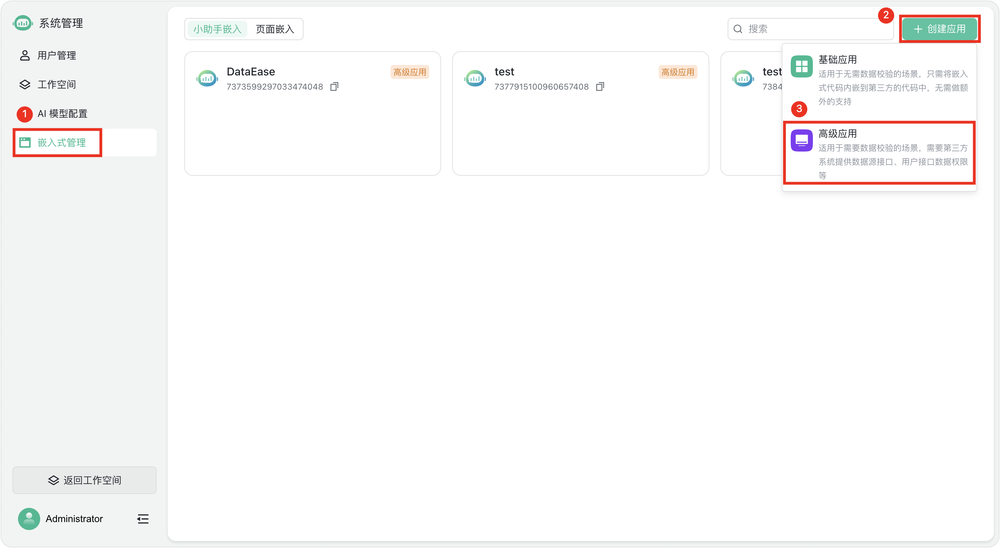
▲图2 SQLBot嵌入式管理界面
创建高级应用的流程分为填写“基础信息”和填写“配置接口”两个步骤。“基础信息”步骤的主要作用是定义该高级应用的基本信息，“配置接口”步骤的主要作用则是将该高级应用与嵌入目标（本文中的嵌入目标为Cordys CRM）进行对接。
在“基础信息”步骤需要填写“应用名称”、“应用描述”和“跨域设置”三个字段，此处我们将该高级应用命名为“销售智能问数系统”。特别需要注意的是，对于“跨域配置”字段，应该填写已经部署好的Cordys CRM的访问地址。此外，为了避免出现跨域异常访问的情况，建议Cordys CRM与SQLBot的访问地址格式保持一致，即Cordys CRM与SQLBot均使用域名或IP地址作为其访问地址。
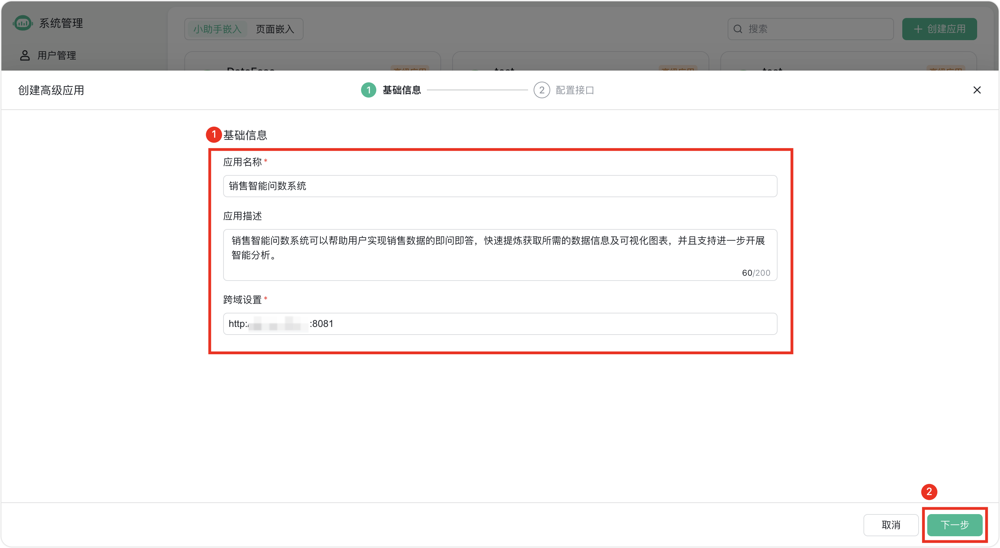
▲图3 SQLBot高级应用“基础信息”设置步骤
“基础信息”步骤的所有字段填写完毕后，点击“下一步”按钮，进入“配置接口”步骤，开始进行“销售智能问数系统”应用与Cordys CRM的对接操作。
在“配置接口”这一步骤里，需要填写“接口URL”字段，并且添加“接口凭证”信息，以完成与Cordys CRM的对接。“接口URL”字段需要填写Cordys CRM的部署地址，即http://CordysCRM-URL/db/structure。注意：只需将CordysCRM-URL替换为自己的Cordys CRM部署地址即可。
添加“接口凭证”信息时，请参考Cordys CRM的官方文档（https://cordys.cn/docs/user_manual/sqlbot/#_2）。按照官方文档的说明，将“接口凭证”的相关信息复制粘贴至SQLBot中即可，“接口凭证”信息填写完毕后，点击“保存”按钮，即可完成“接口凭证”的添加。
特别注意：添加“接口凭证”时，请务必确认完全按照Cordys CRM使用手册中的内容填写，错填、少填以及多填空格都会导致对接失败。
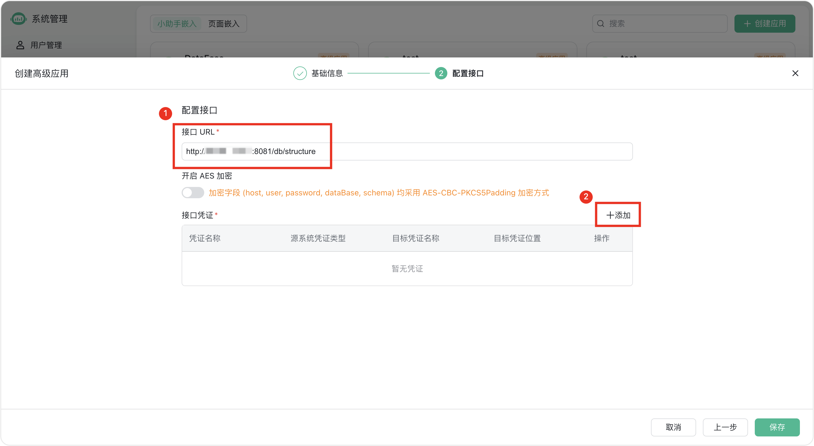
▲图4 SQLBot高级应用“配置接口”设置步骤
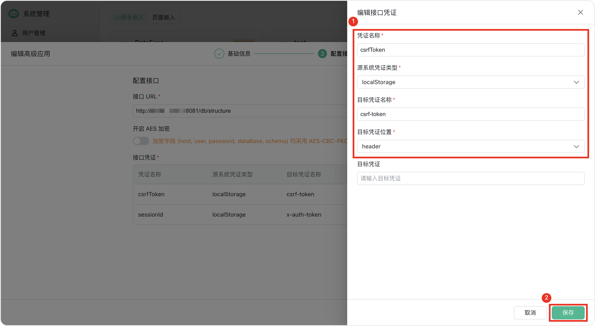
▲图5 “接口凭证”编辑对话框
“接口URL”和“接口凭证”字段都填写完毕后，点击“保存”按钮，即可完成SQLBot“销售智能问数系统”应用的创建，及其与Cordys CRM的对接。
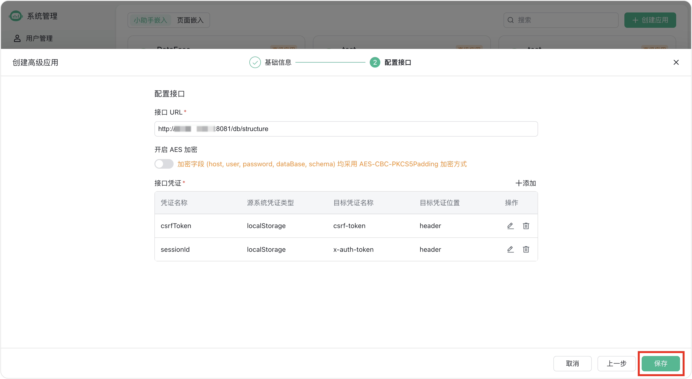
▲图6 “销售智能问数系统”应用创建界面
接下来，根据您实际的部署情况，需要执行不同的操作。
如果您的Cordys CRM和SQLBot均部署于同一台服务器，且均通过1Panel面板安装，可以直接进行应用嵌入的操作步骤；
如果Cordys CRM和SQLBot没有部署在同一台服务器上，或者没有使用同一1Panel面板安装，您可以选择通过1Panel安装、在线安装或者Windows安装的方式先部署好Cordys CRM，同时手动开放数据库默认端口，以便SQLBot能够成功连接Cordys CRM的数据库，并且执行查询操作。
二、将SQLBot高级应用嵌入至Cordys CRM，并开启智能问数开关
为了把在SQLBot中创建好的“销售智能问数系统”应用嵌入到Cordys CRM中，我们需要提前准备好嵌入代码。在SQLBot的“嵌入式管理”页面中，将鼠标的光标移动至刚刚创建好的“销售智能问数系统”应用上，点击“嵌入第三方”按钮，即可查看该应用的嵌入码。
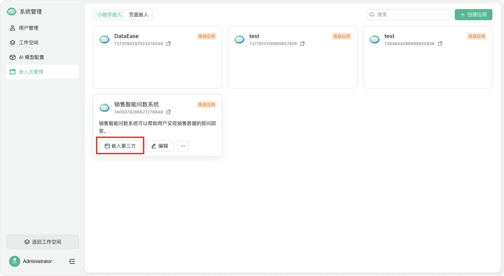
▲图7 SQLBot高级应用的“嵌入第三方”按钮
SQLBot提供了“全屏模式”和“浮窗模式”两种模式的嵌入代码。这里我们以“浮窗模式”为例，选择“浮窗模式”样式，点击“复制以下代码进行嵌入”文字右侧的复制按钮，即可一键复制“浮窗模式”的嵌入码
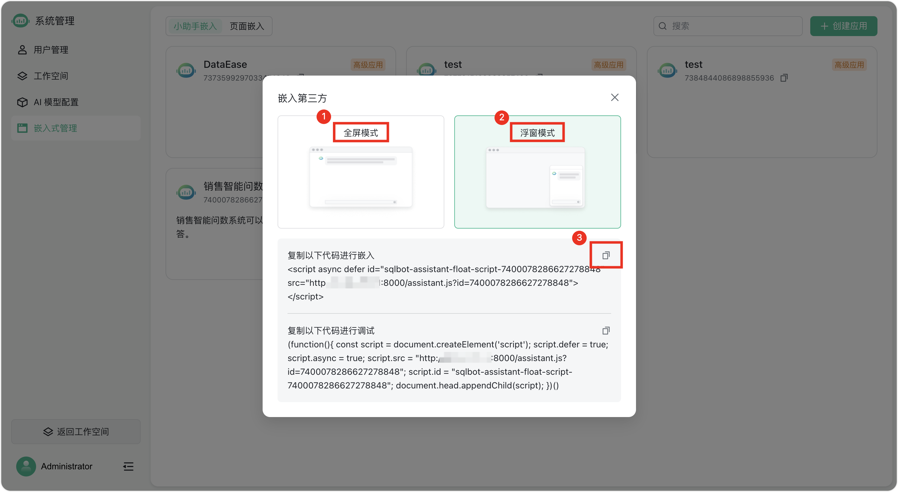
▲图8 在“嵌入第三方”对话框中查看并复制应用嵌入代码
准备好嵌入代码后，我们来到Cordys CRM中。点击Cordys CRM操作界面左侧菜单栏中的“系统”选项，在下拉菜单中选择“企业设置”选项，在右侧的“数据分析工具”栏目中可以看到SQLBot的相关设置情况。点击SQLBot的“配置”按钮，系统弹出“SQLBot配置”对话框。
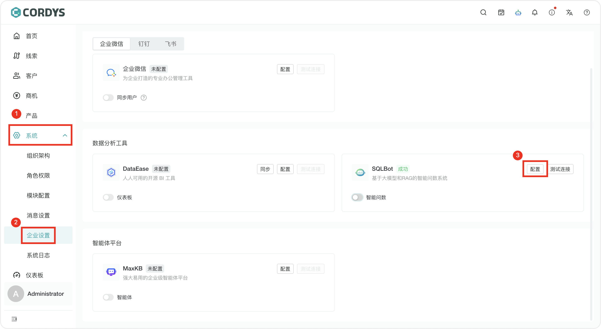
▲图9 SQLBot在Cordys CRM中的配置情况
在“SQLBot配置”对话框中，将刚才复制的“浮窗模式”嵌入代码粘贴至“嵌入脚本”栏目。随后点击“测试连接”按钮，等到页面上方弹出“连接测试通过”的提示语后，即可点击“确认”按钮，完成“销售智能问数系统”应用在Cordys CRM系统的嵌入操作。
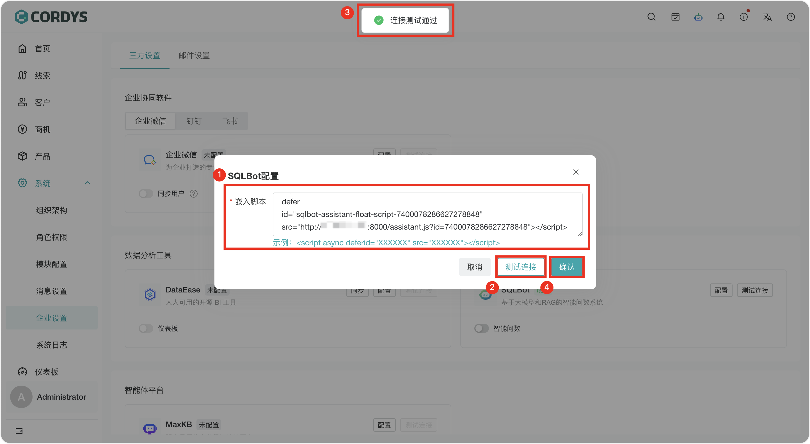
▲图10 在Cordys CRM中配置SQLBot嵌入脚本
“销售智能问数系统”应用嵌入完成后，我们需要完成最后一步，即在Cordys CRM中开启“智能问数”功能。
在Cordys CRM的“企业设置”页面的“数据分析工具”栏目中，打开SQLBot图标下方的“智能问数”开关，页面上方会弹出“启用成功”的提示语。此时，我们就可以在Cordys CRM页面右下角看到SQLBot的悬浮图标了。该图标是用户访问“销售智能问数系统”应用的入口，点击该图标，用户就可以在Cordys CRM中进行智能问数了。
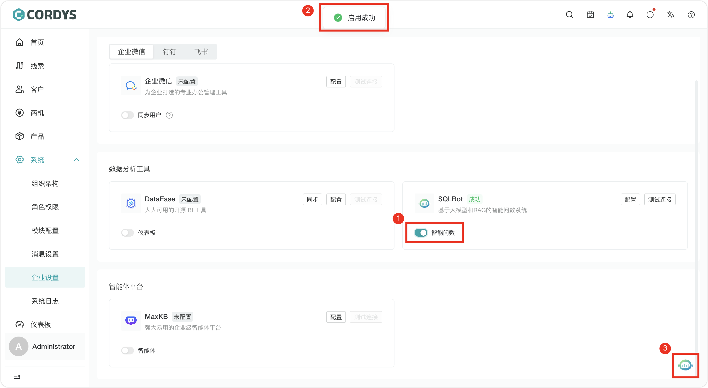
▲图11 在Cordys CRM中打开SQLBot“智能问数”开关
我们现在以“不同行业客户占比”这个问题为例，尝试进行智能问数。可以看到，“销售智能问数系统”应用能够用清晰的图表回答问题。除此以外，在回答下方，还有“数据分析”和“数据预测”两个按钮，点击对应按钮，“销售智能问数系统”应用还可以对本次回答的数据结果开展更深一步的分析洞察。
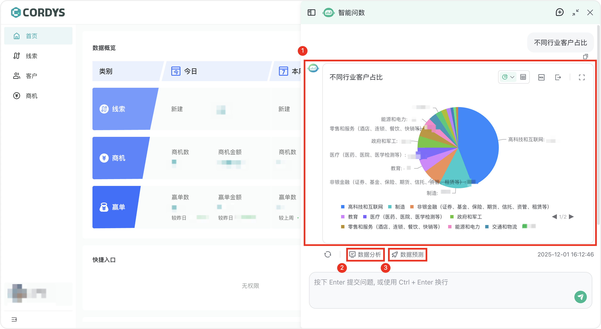
▲图12 SQLBot智能问数效果
以数据分析为例，当我们点击“数据分析”按钮后，“销售智能问数系统”应用便会对本次回答的数据进行文字解读。
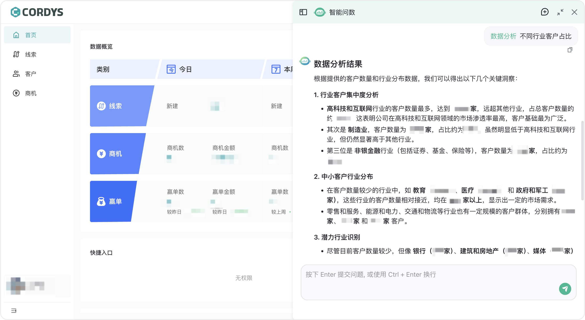
▲图13 SQLBot对智能问数的数据结果进行分析
需要注意的是，本文主要介绍SQLBot应用嵌入Cordys CRM的操作步骤。如果您想进一步提升SQLBot智能问数的准确性，可以参考文章 《学习笔记丨Text2SQL进阶指南：让SQLBot智能问数越问越准的实战技巧》一文进行进阶操作。
三、总结
SQLBot智能问数系统嵌入Cordys CRM的方案，可以有效降低非技术人员获取销售数据的门槛。借助SQLBot智能问数系统，即使用户不具备SQL语句的编写能力，也可以用自然语言与系统对话，实时进行销售数据的查询并获取数据洞察。如果您也想让自己的CRM系统拥有智能问数的能力，不妨尝试一下Cordys CRM和SQLBot的产品组合，希望能够切实提升您的销售管理效率。